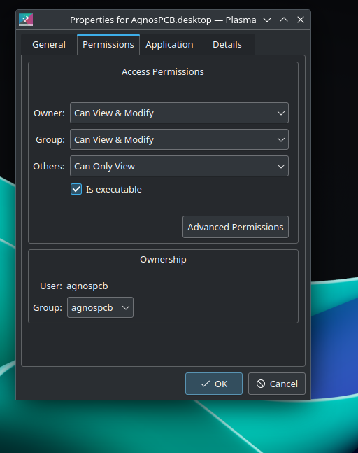
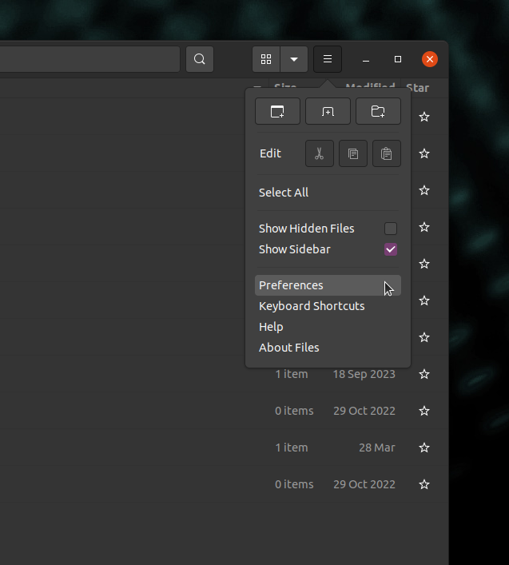
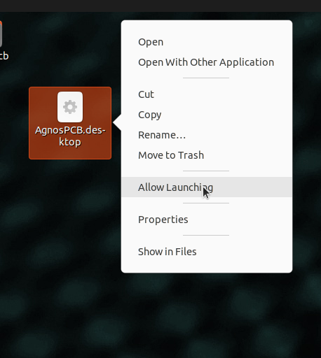
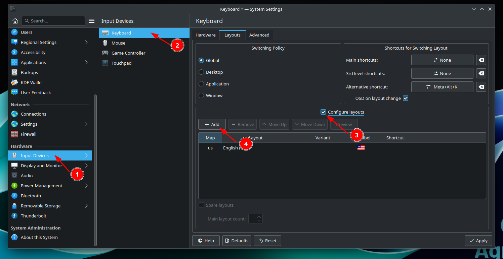
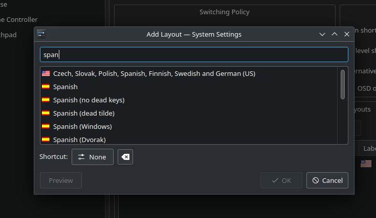
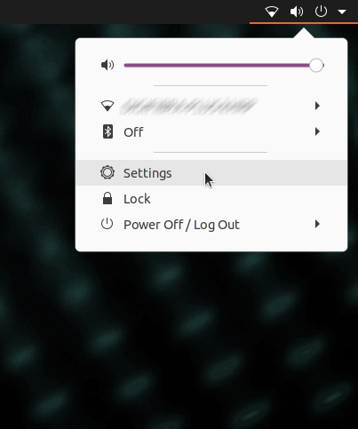
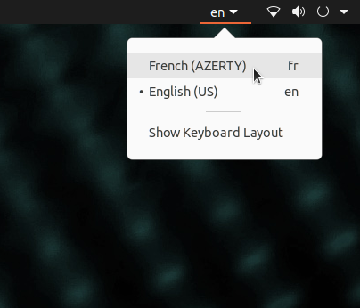

Dépannage
Le logiciel ne démarre pas/ne répond pas
Supprimez le fichier setup.json situé dans le dossier APP, puis relancez l'application.
Attention
Toutes les configurations, telles que le menu mosaïque, seront perdues. Les RÉFÉRENCES pourront être rechargées ultérieurement en utilisant le bouton Charger RÉFÉRENCE. Les utilisateurs EN LIGNE doivent se reconnecter avec leur compte AgnosPCB après avoir supprimé le fichier setup.json.
En essayant de lancer l'application, un message apparaît indiquant que le fichier n'a pas les permissions d'exécution.
Ouvrez une fenêtre de terminal (vous pouvez utiliser le raccourci clavier CTRL + ALT + T) et tapez ce qui suit :
chmod +x APP/Agnospcb.sh
chmod +x APP/Agnospcb.bin
La caméra ne termine pas la procédure d'initialisation et entre en collision avec le cadre
Vous pouvez ajuster les paramètres de retour à l'origine en modifiant le fichier machine.json, situé dans le dossier APP. Il y a trois paramètres qui ajustent les fins de course des axes :
{
...
"xhome":60,
"yhome":50,
"zhome":30,
...
}
Modifiez les paramètres de l'axe affecté en augmentant la valeur si l'axe ne s'arrête pas lorsqu'il atteint l'extrémité. Diminuez la valeur si l'axe n'atteint pas l'extrémité.
J'obtiens des erreurs de « time-out » lors de l'inspection de mes circuits. Comment les résoudre ?
Cela pourrait être dû à une connexion Internet lente. Évitez d'utiliser une connexion Wi-Fi pour garantir une bonne vitesse. Il se pourrait également qu'un pare-feu sur votre réseau local bloque la connexion. Essayez d'accéder à l'adresse web suivante depuis l'AOI pour vérifier si un pare-feu bloque la connexion.
La sensibilité revient à la valeur par défaut après avoir effectué une inspection.
Il y a un paramètre dans le fichier setup.json appelé "remember_sensitivity". Modifiez le fichier et réglez cette valeur sur 1 pour conserver la sensibilité entre les inspections.
L'icône de l'application a disparu. Comment puis-je la restaurer ?
Important
Sélectionnez votre version d'AOI dans les onglets ci-dessous.
- Créez un fichier texte avec le contenu suivant :
[Desktop Entry] Type=Application Name=AgnosPCB Client GenericName=AgnosPCB Cliente Icon=/home/agnospcb/APP/icons/circuit.png Exec=/home/agnospcb/APP/AgnosPCB.sh TryExec=/home/agnospcb/APP/AgnosPCB.sh Terminal=No Categories=Development;IDE;Debugger;ParallelComputing - Enregistrez-le sous le nom AgnosPCB.desktop
- Copiez/déplacez le fichier dans le dossier Bureau (Desktop).
-
Sur le bureau, faites un clic droit sur l'icône -> Propriétés -> Permissions -> Est exécutable

- Créez un fichier texte avec le contenu suivant :
[Desktop Entry] Type=Application Name=AgnosPCB Client GenericName=AgnosPCB Cliente Icon=/home/agnospcb/APP/icons/circuit.png Exec=/home/agnospcb/APP/AgnosPCB.sh TryExec=/home/agnospcb/APP/AgnosPCB.sh Terminal=No Categories=Development;IDE;Debugger;ParallelComputing - Enregistrez-le sous le nom AgnosPCB.desktop et déplacez-le dans le dossier Bureau (Desktop).
-
Ouvrez le gestionnaire de fichiers.

-
Cliquez sur l'icône des 3 lignes, puis sur Préférences.

-
Cliquez sur l'onglet Comportement (Behavior) et sélectionnez "Me demander quoi faire" (Ask me what to do).

-
Redémarrez l'unité.
-
Faites un clic droit sur l'icône > "Autoriser l'exécution" (Allow launching).

Comment changer la disposition du clavier du système ?
Important
Sélectionnez votre version d'AOI dans les onglets ci-dessous.
-
Ouvrez le menu de l'application en haut du bureau ou appuyez sur la touche Windows. Sélectionnez Paramètres du système (System Settings).

-
Naviguez vers Périphériques d'entrée (Input Devices) > Clavier (Keyboard) > Disposition (Layout). Activez Configurer les dispositions (Configure layouts) et appuyez sur Ajouter (Add).

-
Recherchez la disposition de votre clavier et appuyez sur Ok.

-
Déplacez la disposition en première position en appuyant sur Monter (Move up).

-
Ouvrez le menu des paramètres dans le coin supérieur droit.

-
Naviguez vers la section Région et Langue (Region & Language) > Sources d'entrée (Input Sources) > +

-
Appuyez sur l'icône des 3 points.

-
Appuyez sur Autre (Other).

-
Recherchez votre langue > Ajouter (Add).

-
Déplacez la disposition sur la première ligne.

-
Sélectionnez la disposition dans le coin supérieur droit.
